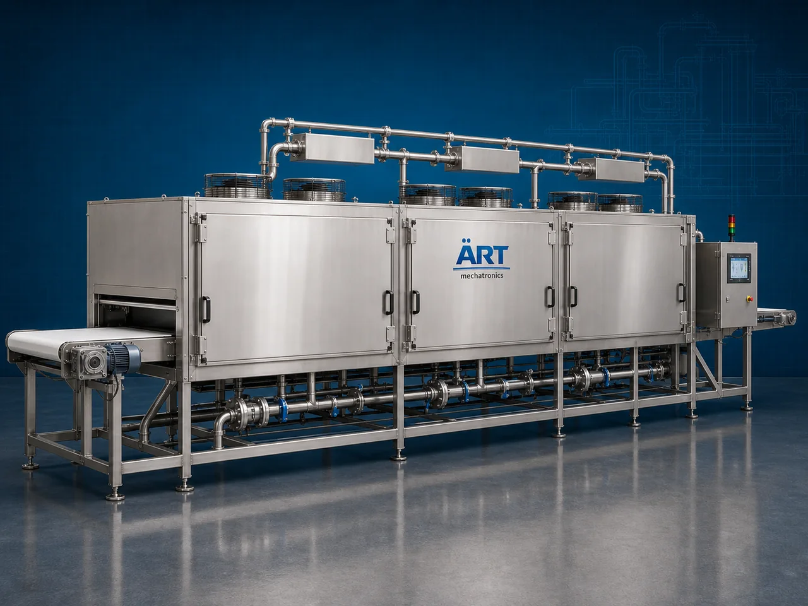

Cooling Tunnel Machine (Industrial Cooling Tunnel & Product Stabilization System)
A Cooling Tunnel Machine, also known as a Cooling Tunnel System, Industrial Cooling Tunnel, Product Stabilization Tunnel, or Continuous Cooling Chamber, is an advanced industrial cooling solution designed for rapid product cooling, temperature stabilization, heat dissipation, moisture control, and conveyorized continuous cooling operations across confectionery, chocolate, bakery, snacks, food processing, pharmaceutical, chemical, plastic, and industrial manufacturing industries.

About the Cooling Tunnel
Cooling tunnel systems are widely used for:
- Chocolate cooling operations
- Confectionery product stabilization
- Snack and bakery cooling
- Coated product hardening
- Industrial process cooling
- Packaging line temperature reduction
- Moisture and heat dissipation
- Continuous production line cooling
The machine improves:
- Product texture and appearance
- Cooling efficiency
- Product stability
- Production productivity
- Packaging quality
- Moisture control
- Industrial automation performance
Industrial cooling tunnel machines use:
- High-efficiency chilled air circulation systems
- Conveyor synchronized cooling technology
- Multi-zone temperature control systems
- PLC and HMI automation controls
- Stainless steel insulated tunnel chambers
to continuously cool and stabilize products while maintaining product quality, shape, texture, and processing consistency with superior efficiency and high industrial productivity.
Cooling tunnel machines are widely used in industries such as:
Confectionery industries Chocolate industries Bakery industries Snack manufacturing industries Food processing industries Pharmaceutical industries Chemical industries Industrial manufacturing industries
where controlled cooling, product stabilization, and continuous high-speed production are essential.
The machine is highly suitable for:
- Chocolate cooling operations
- Coated snack stabilization
- Bakery product cooling
- Conveyorized process cooling
- Packaging line cooling
- Continuous industrial product stabilization systems
ART Mechatronics offers high-performance cooling tunnel machines, engineered for continuous industrial operation, hygienic product handling, energy-efficient cooling, and reliable long-term industrial productivity.
Working Principle of Cooling Tunnel Machine
- 1. Product Feeding & Conveyor Transfer Process Hot or freshly processed products are continuously transferred onto conveyor system for cooling operation.
- 2. Chilled Air Circulation & Cooling Process Machine circulates controlled chilled air through insulated tunnel zones using refrigeration systems and industrial blowers to rapidly remove heat from products.
Advanced airflow and temperature control technology ensure uniform cooling and product stabilization.
- 3. Product Cooling & Stabilization Operation Machine handles cooling of: ✔ Chocolates ✔ Confectionery items ✔ Bakery products ✔ Snacks and namkeen ✔ Coated food products ✔ Pharmaceutical products ✔ Chemical materials ✔ Industrial processed products
accurately and continuously.
- 4. Heat Dissipation & Product Conditioning Process Machine performs: Rapid cooling Product stabilization Chocolate hardening Moisture reduction Heat dissipation Continuous process cooling
for efficient industrial production and packaging operations.
- 5. Intelligent Automation & Hygiene Integration Optional systems include: Multi-zone temperature control systems HEPA filtration systems Variable speed conveyor systems Humidity control systems Remote monitoring systems
- 6. Finished Product Discharge Cooled products discharged automatically for: Packaging operations Storage systems Quality inspection Cold chain transfer Export shipment handling
Types of Cooling Tunnel Machines
- 1. Chocolate Cooling Tunnel Machine Designed for: ✔ Chocolate molding and confectionery cooling applications
- 2. Snack Cooling Tunnel System Suitable for: ✔ Namkeen and fried snack stabilization systems
- 3. Bakery Cooling Tunnel Machine Uses: ✔ Bread, biscuit, and bakery cooling operations
- 4. Multi-Zone Cooling Tunnel Designed for: ✔ Precision industrial product stabilization systems
- 5. Spiral Cooling Tunnel Machine Suitable for: ✔ Space-saving high-capacity cooling operations
- 6. Fully Automatic Industrial Cooling Tunnel System Designed for: ✔ Complete industrial cooling and packaging automation lines
Industries Using Cooling Tunnel Machines
🍫 Confectionery Industry Chocolate cooling, candy stabilization, and coated product processing systems. 🍟 Snack Manufacturing Industry Namkeen, chips, pellets, and fried snack cooling systems. 🍞 Bakery Industry Bread, biscuits, cakes, and baked product cooling operations. 🍅 Food Processing Industry Processed food temperature reduction and stabilization systems. 💊 Pharmaceutical Industry Tablet and medicinal product cooling operations. ⚙️ Industrial Manufacturing Industry Industrial product heat dissipation and process stabilization systems.
Features & Advantages
- High-efficiency continuous cooling operation
- Uniform product stabilization and temperature control systems
- Hygienic stainless steel insulated construction
- PLC and automation control systems
- Improves product appearance and packaging quality
- Reduces moisture and product deformation
- Supports multiple industrial food and material applications
- Reliable long-term industrial performance
- Smooth integration with industrial production lines
Technical Highlights
Machine Type: Cooling tunnel machine Industrial cooling chamber system Continuous cooling conveyor tunnel Material Compatibility: Chocolates Confectionery items Bakery products Snacks and namkeen Processed foods Industrial materials Integration: Chilled air circulation systems Conveyor belt systems Industrial refrigeration systems Temperature monitoring systems Features: PLC control system Touchscreen HMI Stainless steel insulated chamber Multi-zone cooling systems Variable speed conveyors Applications: Product cooling Chocolate stabilization Heat dissipation Temperature stabilization Packaging preparation Continuous production cooling Automation: Semi-automatic Fully automatic industrial systems
Turnkey Cooling Tunnel Solutions
ART Mechatronics offers: Complete cooling tunnel systems Automatic product stabilization solutions Industrial process cooling systems Packaging line integration systems Installation & commissioning After-sales service & AMC
Why Choose Art Mechatronics
Expertise in industrial cooling and automation systems Customized cooling tunnel solutions for multiple industries High-performance and energy-efficient cooling technology Advanced PLC and automation systems Proven industrial production performance across sectors
Applications
Chocolate Manufacturing Plants Snack Processing Facilities Bakery Industries Food Processing Plants Pharmaceutical Manufacturing Units Industrial Production Facilities
Industries that use the Cooling Tunnel
Related Process Equipment machines
Get pricing & specs for the Cooling Tunnel
Share the product, target capacity, current process and plant location. These details help our engineers discuss the right machine or line configuration.
One partner, from design to start-up
ART Mechatronics designs, manufactures, installs and commissions your Cooling Tunnel solution with regional presence in India, UAE and Thailand.